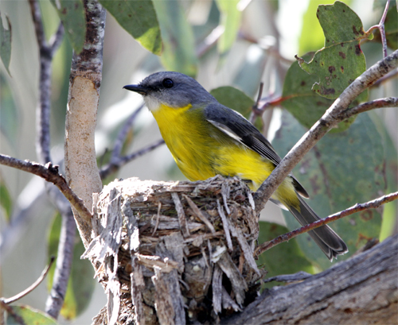
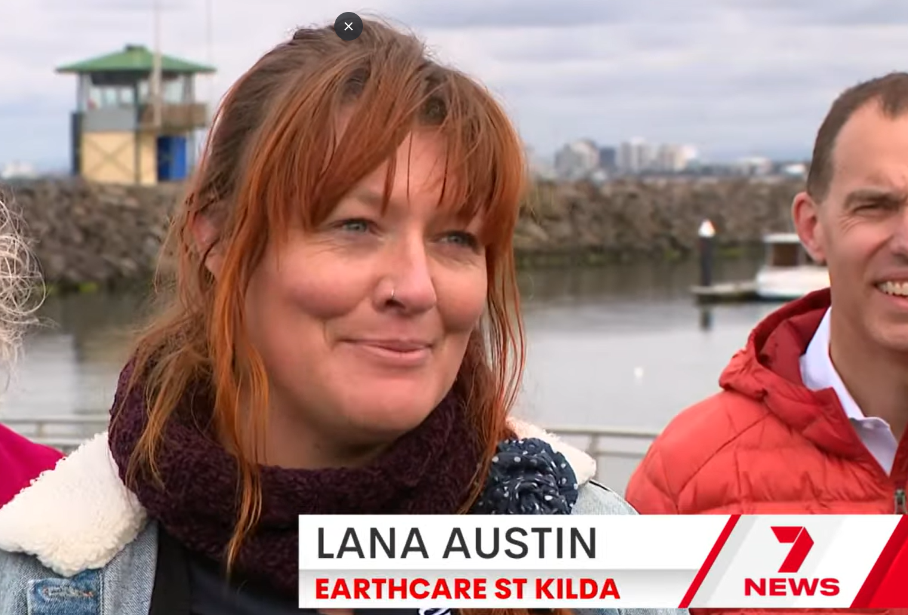
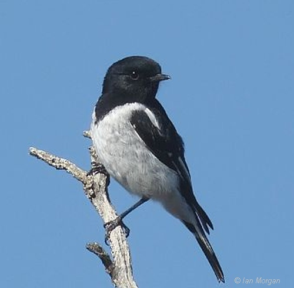
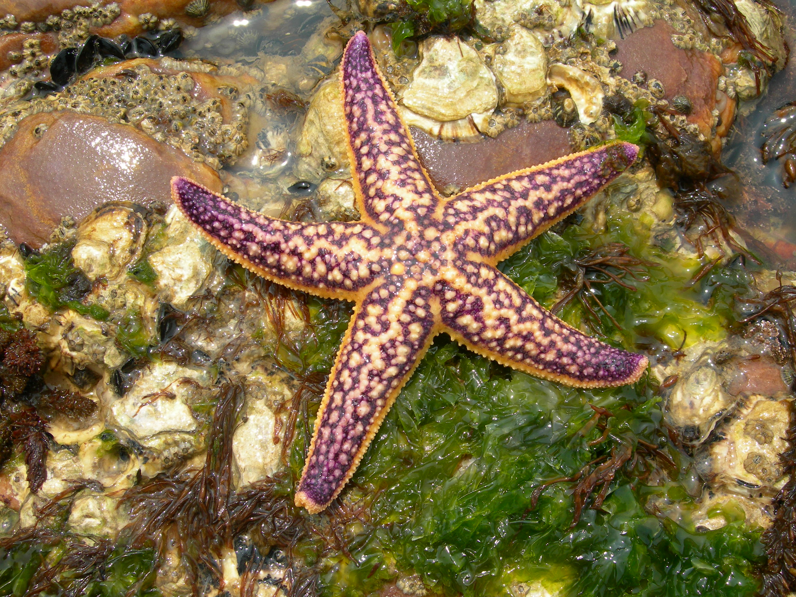
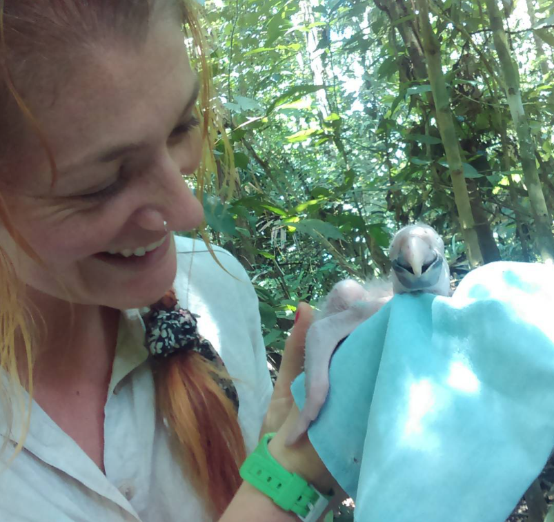
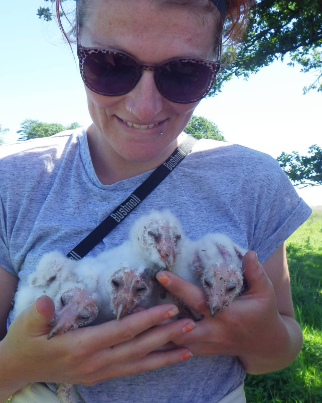
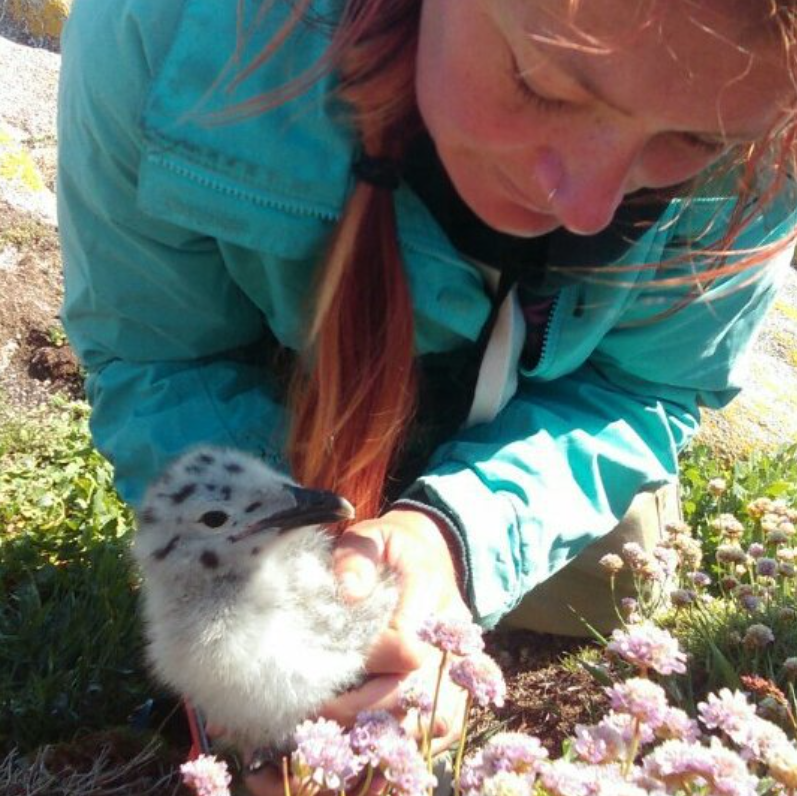
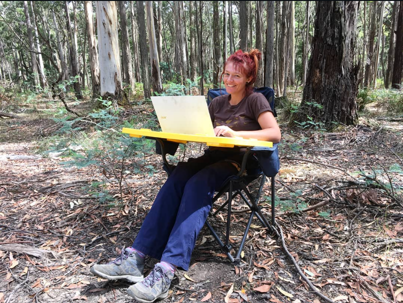

Wominjeka! 👋
I am an ecologist who loves birds. I work on projects that align with my values—that is, projects that protect nature and help keep people connected with it.
Projects

Photo: Geoff Park
Putative-climate adaptation and hybrid fitness consequences in Eastern Yellow Robins
I submitted my PhD in 2025, where I looked what we think is climate adaptation in Eastern Yellow Robins. I worked with the Wildlife Genetics Management Group at Monash University. The central question: if these lineages have evolved such different adaptations to their environments, do their hybrid offspring pay a fitness cost?

St Kilda Penguin Politics
I'm the lead advocate for community involvement and financially accessible penguin viewing at St Kilda. This project has been ongoing for a few years now and will continue for at least a few more. Who knew penguins could be so political?

Photo: Ian Morgan
Decline of Woodland Birds
I'm analysing 30 years of woodland bird data from BirdData, a citizen science platform. This work involves over 1 million bird sighting records collected by citizen scientists across the southeastern woodland bird community. We expect the data to show consistent community-wide declines, with some species doing better than others - particularly those better adapted to anthropogenic changes.

Photo: Richard Pensak
Northern Pacific Sea Star Monitoring
I co-supervised a Deakin honours student in 2025 comparing two survey methods for the Northern Pacific Sea Star in Port Phillip Bay: eDNA detection versus visual surveys. I got involved through Earthcare St Kilda, which conducts monthly removals of this invasive species. We're working to improve monitoring approaches for an Australian Priority Marine Pest.
Automatic Monitoring of EPBC Referrals
I built an automated pipeline that scrapes the EPBC referrals page and searches for specific threatened bird species relevant to my work at BirdLife. When a referral lists expected direct or indirect impacts on trigger species, the system sends an automatic email alert to the BirdLife team for further investigation. This matters because there's currently no way to be notified of EPBC referrals - the initial comment period is only open for 10 business days, making it incredibly easy for projects to slip through without scrutiny. The system is now freely available on GitHub, and it's one of many steps required to "keep the bastards honest."
Resume
Experience
[Add your work experience here]
Education
[Add your education details here]
Publications
Austin, L. M., Amos, J. N., Robledo‐Ruiz, D. A., Zhou, J. W., Clarke, R. H., Pavlova, A., & Sunnucks, P. (2025). Random Mating in a Hybrid Zone Between Two Putative Climate‐Adapted Bird Lineages With Predicted Mitonuclear Incompatibilities. Molecular Ecology, 34(2), e17612.
Low, G.W., Pavlova, A., Gan, H.M., Ko, M.C., Sadanandan, K.R., Lee, Y.P., Amos, J.N., Austin, L., Falk, S., Dowling, D.K. and Sunnucks, P. (2024). Accelerated differentiation of neo-W nuclear-encoded mitochondrial genes between two climate-associated bird lineages signals potential co-evolution with mitogenomes. Heredity, 133(5), 342–354.
Robledo‐Ruiz, D.A., Austin, L., Amos, J.N., Castrejón‐Figueroa, J., Harley, D.K., Magrath, M.J., Sunnucks, P. and Pavlova, A. (2025). Easy‐to‐use R functions to separate reduced‐representation genomic datasets into sex‐linked and autosomal loci, and conduct sex assignment. Molecular Ecology Resources, 25(5), e13844.
Kvistad, L., Falk, S. and Austin, L. (2022). Widespread genomic signatures of reproductive isolation and sex-specific selection in the Eastern Yellow Robin, Eopsaltria australis. G3, 12(9), jkac145.
Shields, J. & Austin, L.M. (2018). Monitoring invasive and threatened aquatic amphibians, mammals, and birds. In Using detection dogs to monitor aquatic ecosystem health and protect aquatic resources (pp. 71–117). Springer.
Photos
Here are some photos of me in the bush—sometimes for work, sometimes for fun. Sometimes the line is blurry.










All birds pictured were handled with the required ethics and research permits.